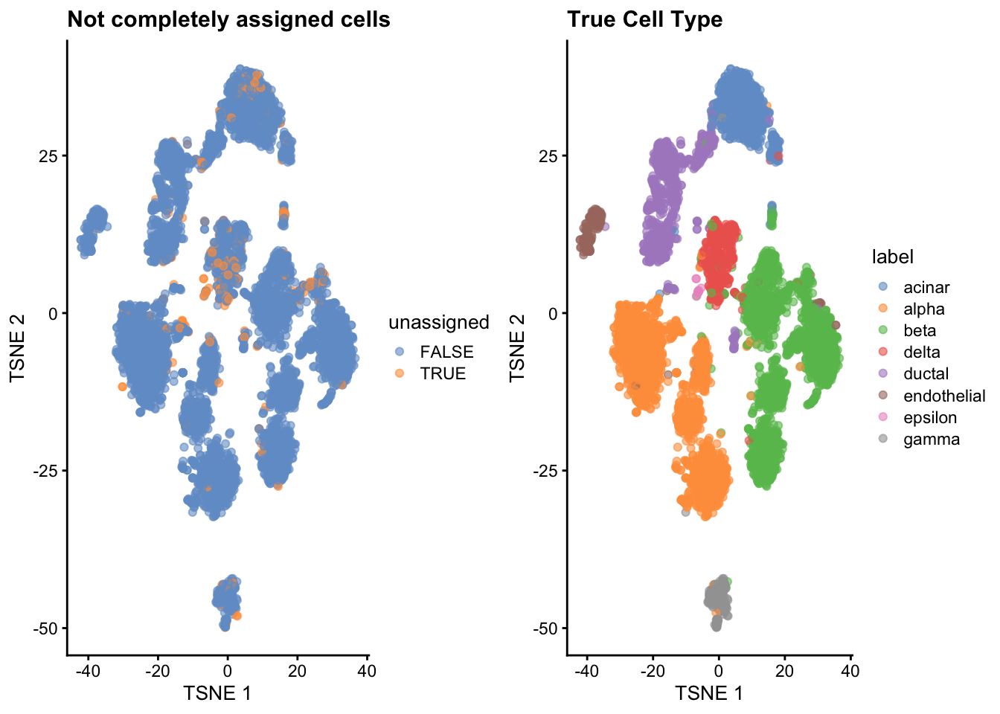
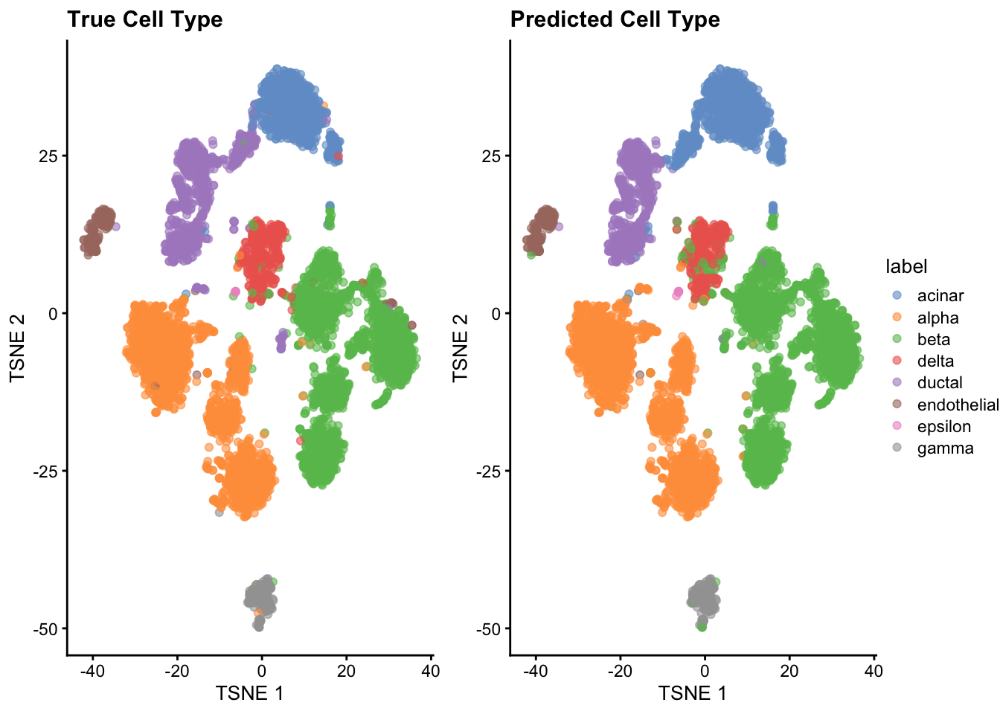
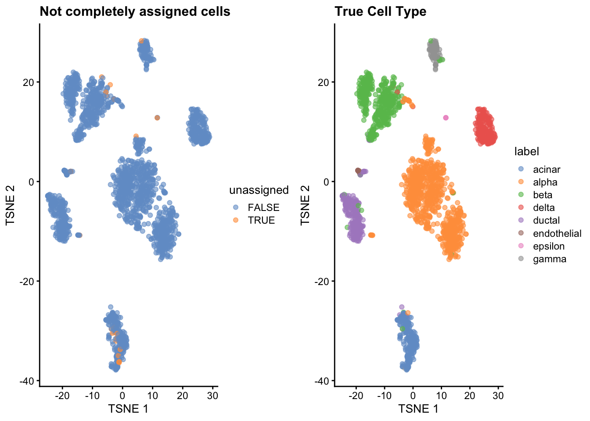
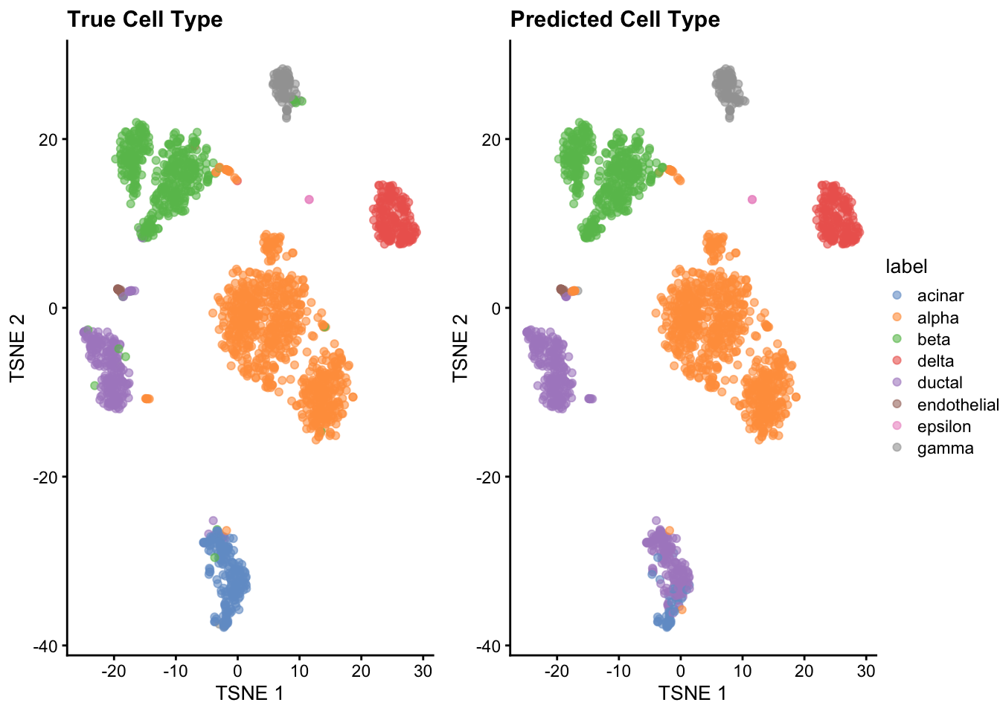

Last updated: 2021-01-07
Checks: 7 0
Knit directory: project-cell-type-annotation/
This reproducible R Markdown analysis was created with workflowr (version 1.6.2). The Checks tab describes the reproducibility checks that were applied when the results were created. The Past versions tab lists the development history.
Great! Since the R Markdown file has been committed to the Git repository, you know the exact version of the code that produced these results.
Great job! The global environment was empty. Objects defined in the global environment can affect the analysis in your R Markdown file in unknown ways. For reproduciblity it’s best to always run the code in an empty environment.
The command set.seed(20201203) was run prior to running the code in the R Markdown file. Setting a seed ensures that any results that rely on randomness, e.g. subsampling or permutations, are reproducible.
Great job! Recording the operating system, R version, and package versions is critical for reproducibility.
Nice! There were no cached chunks for this analysis, so you can be confident that you successfully produced the results during this run.
Great job! Using relative paths to the files within your workflowr project makes it easier to run your code on other machines.
Great! You are using Git for version control. Tracking code development and connecting the code version to the results is critical for reproducibility.
The results in this page were generated with repository version 205d2fd. See the Past versions tab to see a history of the changes made to the R Markdown and HTML files.
Note that you need to be careful to ensure that all relevant files for the analysis have been committed to Git prior to generating the results (you can use wflow_publish or wflow_git_commit). workflowr only checks the R Markdown file, but you know if there are other scripts or data files that it depends on. Below is the status of the Git repository when the results were generated:
Ignored files:
Ignored: .Rhistory
Ignored: .Rproj.user/
Unstaged changes:
Modified: analysis/evaluation.Rmd
Modified: ref.bibtex
Note that any generated files, e.g. HTML, png, CSS, etc., are not included in this status report because it is ok for generated content to have uncommitted changes.
These are the previous versions of the repository in which changes were made to the R Markdown (analysis/scClassify.Rmd) and HTML (docs/scClassify.html) files. If you’ve configured a remote Git repository (see ?wflow_git_remote), click on the hyperlinks in the table below to view the files as they were in that past version.
| File | Version | Author | Date | Message |
|---|---|---|---|---|
| Rmd | 205d2fd | speckerf | 2021-01-07 | wflow_publish(“analysis/scClassify.Rmd”) |
| html | 21ed449 | speckerf | 2021-01-07 | Build site. |
| Rmd | 5e82f40 | speckerf | 2021-01-07 | wflow_publish(“analysis/scClassify.Rmd”) |
| html | 9dbaac2 | stinea98 | 2021-01-06 | Build site. |
| Rmd | cf217f6 | stinea98 | 2021-01-06 | wflow_publish(files = “analysis/scClassify.Rmd”) |
| html | 653a36b | speckerf | 2021-01-06 | Build site. |
| Rmd | dff4c3a | speckerf | 2021-01-06 | add stines comments on theory part |
| html | 3fae119 | speckerf | 2021-01-06 | Build site. |
| Rmd | 35865d4 | speckerf | 2021-01-06 | add changes from felix |
| html | 3b7cbb4 | speckerf | 2021-01-04 | Build site. |
| Rmd | 7f33827 | speckerf | 2021-01-04 | update scClassify Theory part |
| Rmd | a7fc3ca | stinea98 | 2021-01-03 | newest changes |
| html | 9557a68 | speckerf | 2021-01-02 | Build site. |
| Rmd | b943022 | speckerf | 2021-01-02 | minor formatting changes |
| html | 595cc15 | speckerf | 2021-01-02 | Build site. |
| Rmd | 877b0b5 | speckerf | 2021-01-02 | Theory text scClassify |
| Rmd | 7b3b6e3 | stinea98 | 2020-12-30 | wflow_git_commit(all = TRUE) |
| html | 543a43c | stinea98 | 2020-12-30 | Build site. |
| Rmd | 42d9643 | stinea98 | 2020-12-30 | wflow_publish(all = TRUE) |
| html | 0f4360d | speckerf | 2020-12-28 | Build site. |
| Rmd | d16a85d | speckerf | 2020-12-28 | first scClassify predictions |
The package scClassify was developed by Lin et al. (2019) and is a tool for automated cell-type annotation in single-cell RNA sequencing (scRNA-seq data) data. In short, scClassify first constructs a cell-type hierarchy from a reference dataset and then uses an ensemble of different base classifiers to predict cell types at each branch of the hierarchy.
Method description:
The cell type tree is constructed by taking the union of all differentially expressed (DE) genes from one cell type to all other cell types. Then, the average expression of every gene and every cell type is calculated and the cell type tree is constructed using the hierarchical ordered partitioning and collapsing hybrid (HOPACH) algorithm. The algorithm allows each parent node to split into multiple child nodes, instead of only two (Laan, Pollard, and Bryan 2003), which is, according to Lin et al. (2019), more consistent with the natural progression from broad to more specific cell types.
At each node of the tree, an ensemble classifier is built from 30 possible base classifiers where each classifier is a combination of a gene selection method and a similarity metric. Each base classifier is then weighted depending on their training error, resulting in an ensemble classifier.
Possible gene selection methods are: DE, Differential expression, DD, differentially distributed; DV, differentially variable; BD, bimodally distributed; DP, differentially expressed proportions.
Possible similarity metrics are: P, Pearson’s correlation; S, Spearman’s correlation; K, Kendall’s correlation; J, Jaccard distance; C, cosine distance; W, weighted rank correlation.
For prediction, scClassify uses a multilevel approach starting at the root of the cell type tree. At each node, a query cell must have correlations higher than a certain threshold with its nearest neighbours and the weights of it’s assigned cell type must be larger than a threshold (by default 0.7). The predicted cell type is related from the cell types of the k nearest neighbors (default k = 10) by a weighted kNN classifier and the query cell is predicted to have the cell type with the greatest total weight.
Further, scClassify allows the integration of multiple reference data sets, where cell types are predicted from each reference data set individually and then weighted by the training error of the corresponding reference dataset. (Lin et al. 2019)
For this analysis, we train a model for every dataset (only using one reference dataset) with the default parameters of scClassify, using the Pearson’s correlation as a similarity metric, limma (DE) for gene selection and the weighted k-nearest neighbors for gene type prediction.
baron_scClassify_res <- scClassify(exprsMat_train = exprsMat_muraro,
cellTypes_train = muraro$label,
exprsMat_test = list(baron = exprsMat_baron),
similarity = c("pearson"),
selectFeatures = c("limma"),
algorithm = c("WKNN"), verbose = FALSE)
baron$label_pred <- baron_scClassify_res$testRes[[1]]$pearson_WKNN_limma$predLabelMat[,4]
baron$unassigned <- baron_scClassify_res$testRes[[1]]$pearson_WKNN_limma$predLabelMat[,4] == "unassigned"pred_labels_baron <- as.data.frame(table(baron$label_pred))
names(pred_labels_baron) <- c("cell_type", "Predicted by scClassify")
labels_baron_scClassify <- merge(pred_labels_baron, true_labels_baron)
knitr::kable(labels_baron_scClassify) #distribution of predicted labels| cell_type | Predicted by scClassify | True Baron |
|---|---|---|
| acinar | 1088 | 958 |
| alpha | 2306 | 2326 |
| beta | 2543 | 2525 |
| delta | 422 | 601 |
| ductal | 837 | 1077 |
| endothelial | 235 | 252 |
| epsilon | 8 | 18 |
| gamma | 218 | 255 |
One characteristic of scClassify is that it doesn’t annotate some cells at all (calling them unassigned) and some only partially (e.g. acinar_ductal: means either acinar or ductal). We investigate these types of cells visually in the t-SNE plots, because we want to exclude them later from the results, to allow a better comparison between the methods.
p1.1 <- plotReducedDim(baron, "TSNE", colour_by = "unassigned") + ggtitle(label = "Not completely assigned cells")
p1.2 <- plotReducedDim(baron, "TSNE", colour_by = "label") + ggtitle(label = "True Cell Type")
ggpubr::ggarrange(p1.1, p1.2, common.legend = FALSE, legend = "right")
In total, 355 cells were not assigned to a single cell type. From the t-SNE plots, we see that most cells that are unassigned can be found in one cluster in the middle and one on the top of the plot, which are supposed to be delta and acinar cells. Because the other methods also had problems correctly discriminating these two cell types, we decided to exclude the unassigned cells from the evaluation part (also for the other two methods). We hope that this does not introduce too much of a bias in favor of the scClassify method, due to the fact that all methods seem to struggle most with the classification of the same two cell types.
For comparing the predicted with the true cell type, we leave out all the unassigned cells.
p1.3 <- plotReducedDim(baron[,!baron$unassigned], "TSNE", colour_by = "label") + ggtitle(label = "True Cell Type")
p1.4 <- plotReducedDim(baron[,!baron$unassigned], "TSNE", colour_by = "label_pred") + ggtitle(label = "Predicted Cell Type")
ggpubr::ggarrange(p1.3, p1.4, common.legend = TRUE, legend = "right")
We see that the annotations performed by scClassify are relatively good. However, the small cluster between the two larger clusters of acinar and ductal cells was missclassified. Additionally, some delta cells from the cluster in the middle were incorrectly classified as beta cells. This is also reflected in the table above: scClassify classified to many cells as acinar and too few as ductal, and additionally too few as delta.
muraro_scClassify_res <- scClassify(exprsMat_train = exprsMat_baron,
cellTypes_train = baron$label,
exprsMat_test = list(muraro = exprsMat_muraro),
similarity = c("pearson"),
selectFeatures = c("limma"),
algorithm = c("WKNN"))
muraro$label_pred <- muraro_scClassify_res$testRes[[1]]$pearson_WKNN_limma$predLabelMat[,3]
muraro$unassigned <- muraro_scClassify_res$testRes[[1]]$pearson_WKNN_limma$predLabelMat[,3] == "unassigned"pred_labels_muraro <- as.data.frame(table(muraro$label_pred))
names(pred_labels_muraro) <- c("cell_type", "Predicted by scClassify")
labels_muraro_scClassify <- merge(pred_labels_muraro, true_labels_muraro)
knitr::kable(labels_muraro_scClassify) #distribution of predicted labels| cell_type | Predicted by scClassify | True Muraro |
|---|---|---|
| acinar | 49 | 218 |
| alpha | 801 | 803 |
| beta | 432 | 446 |
| delta | 187 | 191 |
| ductal | 396 | 242 |
| endothelial | 21 | 20 |
| epsilon | 2 | 3 |
| gamma | 104 | 99 |
Again, we start by investigating which cells were unassigned and to which clusters they belong.
p2.1 <- plotReducedDim(muraro, "TSNE", colour_by = "unassigned") + ggtitle(label = "Not completely assigned cells")
p2.2 <- plotReducedDim(muraro, "TSNE", colour_by = "label") + ggtitle(label = "True Cell Type")
ggpubr::ggarrange(p2.1, p2.2, common.legend = FALSE, legend = "right")
In total 30 cells were not assigned to a single cell type. Investigating the above t-SNE plots we see that most of them are belonging to acinar cells.
Again, we leave out all unassigned cells and compare the predicted with the true cell type.
p2.3 <- plotReducedDim(muraro[,!muraro$unassigned], "TSNE", colour_by = "label") + ggtitle(label = "True Cell Type")
p2.4 <- plotReducedDim(muraro[,!muraro$unassigned], "TSNE", colour_by = "label_pred") + ggtitle(label = "Predicted Cell Type")
ggpubr::ggarrange(p2.3, p2.4, common.legend = TRUE, legend = "right")
Overall, the predictions seem to be reasonably good. However, we see that many cells from the cluster in the bottom was misclassified as ductal cells instead of acinar cells. This can also be verified in the table above. For instance, scClassify only predicted \(49\) out of the \(218\) true acinar cells correctly.
As already explained, we identify all cells, which are not assigned down to the tips, and remove them from the downstream analysis. This is done, because the unassigned cells are presumably harder to correctly identify for every method and therefore we can only compare the three methods, if these cells are exluded in the evaluation.
#extract true and predicted labels
pred.baron.labels <- baron_scClassify_res$testRes[[1]]$pearson_WKNN_limma$predRes
true.baron.labels <- baron$label
names(true.baron.labels) <- names(pred.baron.labels)
pred.muraro.labels <- muraro_scClassify_res$testRes[[1]]$pearson_WKNN_limma$predRes
true.muraro.labels <- muraro$label
names(true.muraro.labels) <- names(pred.muraro.labels)
# save logical with unassigned cells for removal in the other two methods
unassigned_baron <- baron_scClassify_res$testRes[[1]]$pearson_WKNN_limma$predLabelMat[,4] == "unassigned"
saveRDS(unassigned_baron, file="data/baron_unassigned_scClassify.rds")
pred.baron.labels <- pred.baron.labels[!unassigned_baron]
pred.baron.labels <- pred.baron.labels[!is.na(pred.baron.labels)]
saveRDS(pred.baron.labels, file="data/scClassify.pred.baron.labels.rds")
true.baron.labels <- true.baron.labels[!unassigned_baron]
true.baron.labels <- true.baron.labels[!is.na(true.baron.labels)]
saveRDS(true.baron.labels, file="data/scClassify.true.baron.labels.rds")
unassigned_muraro <- muraro_scClassify_res$testRes[[1]]$pearson_WKNN_limma$predLabelMat[,3] == "unassigned"
saveRDS(unassigned_muraro, file="data/muraro_unassigned_scClassify.rds")
pred.muraro.labels <- pred.muraro.labels[!unassigned_muraro]
pred.muraro.labels <- pred.muraro.labels[!is.na(pred.muraro.labels)]
saveRDS(pred.muraro.labels, file="data/scClassify.pred.muraro.labels.rds")
true.muraro.labels <- true.muraro.labels[!unassigned_muraro]
true.muraro.labels <- true.muraro.labels[!is.na(true.muraro.labels)]
saveRDS(true.muraro.labels, file="data/scClassify.true.muraro.labels.rds")Laan, Mark Van der, Katherine Pollard, and Jennifer Bryan. 2003. “A New Partitioning Around Medoids Algorithm.” Journal of Statistical Computation and Simulation 73 (8). Taylor & Francis: 575–84.
Lin, Yingxin, Yao Cao, Hani J Kim, Agus Salim, Terence P Speed, Dave Lin, Pengyi Yang, and Jean Yee Hwa Yang. 2019. “ScClassify: Hierarchical Classification of Cells.” bioRxiv. Cold Spring Harbor Laboratory, 776948.
R version 4.0.3 (2020-10-10)
Platform: x86_64-apple-darwin17.0 (64-bit)
Running under: macOS Big Sur 10.16
Matrix products: default
BLAS: /Library/Frameworks/R.framework/Versions/4.0/Resources/lib/libRblas.dylib
LAPACK: /Library/Frameworks/R.framework/Versions/4.0/Resources/lib/libRlapack.dylib
locale:
[1] de_CH.UTF-8/de_CH.UTF-8/de_CH.UTF-8/C/de_CH.UTF-8/de_CH.UTF-8
attached base packages:
[1] parallel stats4 stats graphics grDevices utils datasets
[8] methods base
other attached packages:
[1] scater_1.18.3 ggplot2_3.3.2
[3] BiocParallel_1.24.1 knitr_1.30
[5] scClassify_1.3.1 SingleCellExperiment_1.12.0
[7] SummarizedExperiment_1.20.0 Biobase_2.50.0
[9] GenomicRanges_1.42.0 GenomeInfoDb_1.26.2
[11] IRanges_2.24.0 S4Vectors_0.28.0
[13] BiocGenerics_0.36.0 MatrixGenerics_1.2.0
[15] matrixStats_0.57.0 workflowr_1.6.2
loaded via a namespace (and not attached):
[1] ggbeeswarm_0.6.0 colorspace_2.0-0
[3] ggsignif_0.6.0 rio_0.5.16
[5] ellipsis_0.3.1 rprojroot_2.0.2
[7] scuttle_1.0.3 XVector_0.30.0
[9] BiocNeighbors_1.8.2 fs_1.5.0
[11] rstudioapi_0.13 proxy_0.4-24
[13] ggpubr_0.4.0 farver_2.0.3
[15] graphlayouts_0.7.1 ggrepel_0.9.0
[17] splines_4.0.3 sparseMatrixStats_1.2.0
[19] polyclip_1.10-0 hopach_2.50.0
[21] broom_0.7.2 cluster_2.1.0
[23] kernlab_0.9-29 ggforce_0.3.2
[25] compiler_4.0.3 backports_1.2.1
[27] Matrix_1.2-18 limma_3.46.0
[29] later_1.1.0.1 tweenr_1.0.1
[31] BiocSingular_1.6.0 htmltools_0.5.0
[33] tools_4.0.3 rsvd_1.0.3
[35] igraph_1.2.6 gtable_0.3.0
[37] glue_1.4.2 GenomeInfoDbData_1.2.4
[39] dplyr_1.0.2 Rcpp_1.0.5
[41] carData_3.0-4 cellranger_1.1.0
[43] vctrs_0.3.6 nlme_3.1-150
[45] DelayedMatrixStats_1.12.1 ggraph_2.0.4
[47] xfun_0.19 stringr_1.4.0
[49] openxlsx_4.2.3 beachmat_2.6.2
[51] lifecycle_0.2.0 irlba_2.3.3
[53] statmod_1.4.35 rstatix_0.6.0
[55] zlibbioc_1.36.0 MASS_7.3-53
[57] scales_1.1.1 tidygraph_1.2.0
[59] hms_0.5.3 promises_1.1.1
[61] curl_4.3 yaml_2.2.1
[63] gridExtra_2.3 segmented_1.3-0
[65] stringi_1.5.3 highr_0.8
[67] zip_2.1.1 rlang_0.4.9
[69] pkgconfig_2.0.3 bitops_1.0-6
[71] evaluate_0.14 lattice_0.20-41
[73] purrr_0.3.4 labeling_0.4.2
[75] cowplot_1.1.0 tidyselect_1.1.0
[77] magrittr_2.0.1 R6_2.5.0
[79] generics_0.1.0 DelayedArray_0.16.0
[81] haven_2.3.1 foreign_0.8-80
[83] pillar_1.4.7 whisker_0.4
[85] withr_2.3.0 mgcv_1.8-33
[87] mixtools_1.2.0 proxyC_0.1.5
[89] abind_1.4-5 survival_3.2-7
[91] RCurl_1.98-1.2 tibble_3.0.4
[93] car_3.0-10 crayon_1.3.4
[95] rmarkdown_2.5 viridis_0.5.1
[97] readxl_1.3.1 grid_4.0.3
[99] data.table_1.13.4 minpack.lm_1.2-1
[101] git2r_0.27.1 forcats_0.5.0
[103] digest_0.6.27 diptest_0.75-7
[105] tidyr_1.1.2 httpuv_1.5.4
[107] RcppParallel_5.0.2 munsell_0.5.0
[109] beeswarm_0.2.3 viridisLite_0.3.0
[111] vipor_0.4.5